d <- rio::import(file = "adat/fokomp_elemzes_tantargyak.xlsx")
str(d)
#> 'data.frame': 9 obs. of 4 variables:
#> $ matek : num 5 4 3 2 5 1 5 2 5
#> $ fizika : num 5 5 3 3 4 2 4 3 5
#> $ informatika: num 4 4 4 2 5 1 5 2 5
#> $ kemia : num 5 5 3 3 5 1 5 3 5
d
#> matek fizika informatika kemia
#> 1 5 5 4 5
#> 2 4 5 4 5
#> 3 3 3 4 3
#> 4 2 3 2 3
#> 5 5 4 5 5
#> 6 1 2 1 1
#> 7 5 4 5 5
#> 8 2 3 2 3
#> 9 5 5 5 52 Főkomponens elemzés
A főkomponens elemzés a legegyszerűbb többváltozós statisztikai eljárások egyike. Olyan eljárás, amely az egy jelenségre vonatkozó méréseket úgy „összegzi”, hogy közben az óhatatlanul fellépő információ veszteséget a lehető legkisebb mértékűre csökkenti.
A módszer alapgondolata az, hogy vegyünk \(p\) változót: \(X_1,X_2,\dots,X_p\), majd keressük meg ezek kombinációit, hogy ezáltal \(Z_1,Z_2,..,Z_p\)-vel jelölt indexeket kaphassunk, melyek egymással nem korrelálnak, továbbá \(var(Z_1 )\geq var(Z_2 )\geq \dots \geq var(Z_p)\), ahol \(var(Z_i)\) a \(Z_i\) komponens varianciáját jelöli.
A korreláció hiánya a \(Z_i\)-kben hasznos tulajdonság, ugyanis azt jelenti, hogy az indexek az adatok különböző “dimenzióit” mérik.
A \(Z_i\)-t főkomponensnek nevezzük. Amikor főkomponens-analízist végzünk, mindig abban bízunk, hogy a legtöbb index varianciája elhanyagolhatóan kicsi. Ezáltal az adatok varianciája adekvátan leírható néhány olyan \(Z_i\) változóval, melyek varianciája nem elhanyagolható.
A főkomponens analízis működéséhez szükséges, hogy az eredeti \(X_1,X_2,\dots,X_p\) változók korreláljanak egymással (akár pozitív, akár negatív irányban), ekkor elképzelhető az az eset, hogy 20-30 eredeti változót adekvátan reprezentálhat 2-3 főkomponens. Ha pedig ez teljesül, akkor a fontosabb főkomponensek (melyek varianciája elég nagy) lesznek csupán érdekesek, hiszen ezek fogják az adatok „dimenzióit” mérni. Természetesen nagyon fontos azt is tudnunk, hogy rengeteg eredeti változónk van, és legtöbbjük ugyanazt, vagy legalábbis hasonló dolgokat mér.
2.1 A főkomponens elemzés menete
Az eredeti \(X_1,X_2,\dots,X_p\) változókból a \(Z_i=a_i1 X_1+ a_i2 X_2+\dots + a_ip X_p\) lineáris kombinációk segítségével kapjuk meg a főkomponenseket, azzal feltétellel, hogy \(a_{i1}^2+a_{i2}^2+\dots+a_{ip}^2=1\), és az egymás után létrejövő \(Z_1,Z_2,…,Z_p\) főkomponensek nem korrelálnak egymással.
Gyakran az \(X_1,X_2,\dots,X_p\) változó standardizált értékeiből indulunk ki, hogy a változók arányosan fejtsék ki hatásukat a főkomponensekre. A jamovi is így végzi az elemzést. Ekkor a változok átlaga nulla, szórása és variancia pedig 1 lesz.
A részletek ismertetése nélkül a keresett \(a_{i1},a_{i2},\dots,a_{ip}\) együtthatók megtalálása egy sajátérték-sajátvektor keresési feladat az eredeti \(X_1,X_2,\dots,X_p\) változók korrelációs mátrixában. A megtalált \(p\) darab sajátérték $_1_2_p>0 $sorrendjét feltételezve, \(\lambda_i\) az \(i.\) főkomponens varianciáját adja \((\lambda_i=var(Z_i))\), és a megtalált \(p\) darab sajátvektorból az \(i.\) egyes elemei lesznek a \(Z_i=a_{i1} X_1+ a_{i2} X_2+\dots+ a_{ip} X_p\) főkomponens \(a_{i1},a_{i2},\dots,a_{ip}\) együtthatói.
Fontos összefüggés, hogy a főkomponensek (\(Z_i\)-k) varianciájának az összege egyenlő az eredeti standardizált változók (\(X_i\)-k) varianciájának összegével, azaz \(\lambda_1+\lambda_2+\dots+\lambda_p=1+1+\dots+1=p.\)
2.2 A főkomponens elemzés alkalmazási feltételei
- A főkomponens elemzés során általában 4-5-ször (egyes szerzőknél 10-szer) nagyobb a mintaelemszám a vizsgált változók számánál.
- A faktoranalízis feltétele, hogy egymással korreláló változókból induljunk ki. A Bartlett-féle szferikus próba nullhipotézise, hogy a változók korrelálatlanok (vagyis a korrelációs mátrixnak a főátlón kívüli elemei csak véletlenül térnek el a nullától). A szignifikáns p-érték a kedvező a főkomponens elemzés számára. (Megjegyezzük, hogy a túlságosan magas egyirányú korrelációk sem jók, ugyanis ez azt okozhatja, hogy a főkomponens elemzésnek nem lesz megoldása, ugyanis minden változó egy faktorba kerül.)
- Az MSA (Measure of Sampling Adequecy) az egyes változók esetében mutatja meg, hogy mennyire van szoros kapcsolatban a többi változóval. Érdemes a 0,5 alatti MSA értékkel rendelkező változókat kizárni az elemzésből. Értéke 0 és 1 közötti lehet.
- A Kaiser-Meyer-Olkin- (KMO) kritérium az MSA értékek átlaga. Míg az MSA érték az egyes változókra vonatkozik, a KMO az összes változóra egyidejűleg. A KMO mutatószám jelentését a következőképpen ítélhetjük meg:
- KMO ≥ 0,9 kiváló
- KMO ≥ 0,8 nagyon jó
- KMO ≥ 0,7 megfelelő
- KMO ≥ 0,6 közepes
- KMO ≥ 0,5 gyenge
- KMO < 0,5 elfogadhatatlan.
2.3 A főkomponensek forgatása (rotáció)
A faktorkiválasztás (extrakció) során az elemzés elsődleges célja, hogy maximalizálja a főkomponensek varianciáját, amely eredményeként megkapjuk a rotálatlan faktorsúly-mátrixot. A faktorsúly az eredeti változó és az adott faktor közötti korrelációt mutatja, amelynek értéke a korrelációs együtthatókhoz hasonlóan -1 és 1 között változhat.
A faktorkiválasztás során azonban előfordulhat, hogy olyan változók fognak korrelálni egy adott faktorral, amelyeknek semmi közük egymáshoz, ezáltal lehetetlenné téve az értelmezést. Ezen a problémán segít a forgatás, vagy más néven rotáció. A faktor-rotáció azt jelenti, hogy a faktorok tengelyeit elforgatjuk úgy, hogy egyszerűbb és értelmezhetőbb faktormegoldáshoz vezessen.
A rotáció (forgatás) során nem változnak sem a kommunalitás, sem pedig az összes magyarázott variancia, csak a faktorok sajátértékei/magyarázott varianciái módosulnak.
A rotáláson belül két típust különböztetünk meg: a derékszögű (ortogonális) (Varimax, Equimax, Quartimax) és a hegyesszögű (nem ortogonális) (Direct Oblimin, Promax) forgatási módszereket.
A derékszögű esetében a tengelyek merőlegesen állnak egymásra, ezáltal a faktorok nem korrelálnak egymással, míg a hegyesszögű esetében ezek tetszőleges szöget zárnak be egymással, vagyis a faktorok korrelálni fognak egymással.
2.4 Példa: Négy tantárgy osztályzata
- A példa forrása: Münnich és mtsai. (2006) 2.3.1 fejezettől Probléma
- Kapcsolódó jamovi állomány:
fokomp_elemzes_tantargyak.omv.
1. Határozzuk meg a korrelációs mátrixot (jamovi-ban: Regression / Correlation matrix)
Az adatok a fokomp_elemzes_tantargyak.xlsx állományban találhatók.
cor(d)
#> matek fizika informatika kemia
#> matek 1.0000000 0.8712476 0.9492623 0.9499475
#> fizika 0.8712476 1.0000000 0.7662496 0.9271176
#> informatika 0.9492623 0.7662496 1.0000000 0.8867155
#> kemia 0.9499475 0.9271176 0.8867155 1.0000000
A korrelációs mátrix adatai arra utalnak, hogy szoros kapcsolat van a változók között. A korrelációs értékek nullánál nagyobbak, ami azonos irányú tendenciákra utal. E két mátrix is alátámasztja a feltételezésünket, hogy a változók szorosan együtt változnak.
2. Ellenőrizzük le az adatok alkalmasságát (jamovi-ban: Factor / Principal Component Analysis)
A változóink eleget tesznek a Bartlett-féle szferikus próbának, a korrelációs mátrix nem egységmátrix \((p<0,001)\), az MSA értékek is nagyobban \(0,5\)-nél és a KMO érték is megfelelő.
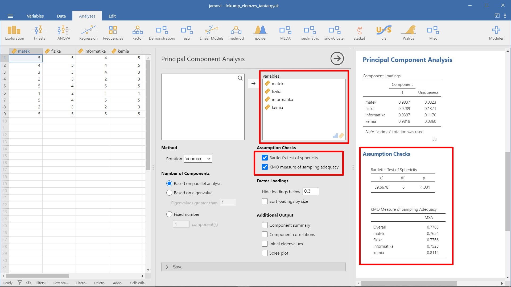
3. Határozzuk meg a komponensek számát
Elvileg annyi főkomponenst lehet kiszámolni, ahány változónk van, a célunk azonban a komponensek számának minimalizálása.
Több eljárás létezik a főkomponensek számának meghatározására:
- Horn-féle párhuzamos analízis (jamovi-ban:
Based on parallel analysis): modern eljárás, amely szimuláció segítségével állapítja meg a főkomponensek számát (Horn, 1965). - A priori meghatározás (jamovi-ban:
Fixed number): korábbi ismerete alapján megadjuk a főkomponensek számát. - Sajátértéken alapuló megoldás (jamovi-ban:
Based on eigenvalue): tipikusan csak az 1-nél nagyobb sajátértékű faktorokat tartjuk bent a modellben. Az 1-nél kisebb varianciájú faktorok ugyanis nem jobbak mint az eredeti standardizált változók - Sajátértékábrán (scree-plot, kőtörmelék ábra) alapuló meghatározás (jamovi-ban:
Scree plot): a sajátérték ábra a sajátértékek ábrázolása a főkomponensek sorrendjében. Az ábra formája alapján lehet következtetni a főkomponensek számára: ahol a görbe meredekségében van egy határozott törés, meredekebb rész után laposabb jön. Ahol tehát a görbe laposodása elkezdődik, az a figyelembe vett főkomponensek megfelelő száma. - Magyarázott varianciahányadon alapuló meghatározás (jamovi-ban:
Component summary): ekkor az előállított főkomponensek számát úgy határozzuk meg, hogy a főkomponensek által magyarázott variancia kumulált százalékos értéke elérjen egy megfelelő szintet. A megfelelő szint (60%-95%-ig) a probléma jellegétől függ.
A Horn-féle párhuzamos elemzés 1 főkomponenst javasol.
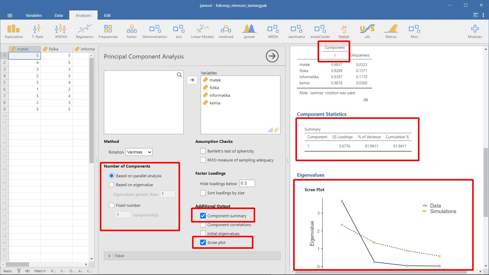
4. Válasszunk forgatást (jamovi-ban: Rotation)
A jamovi alapértelmezés szerint a Varimax forgatást ajánlja, amely derékszögű koordinátatengelyeket eredményez és a legtöbb esetben ez a megfelelő választás. Lehetőségünk van ezen módosítani. Az összes lehetőség:
- None – rotálatlan elemzés
- Varimax
- Qartimax
- Promax
- Oblimin
- Simplimax
Mivel egyetlen főkomponensünk van, így nem változtatunk az alapértelmezett Varimax beállításon.
5. A főkomponens elemzés eredménye
Komponens mátrix (jamoviban: Component loadings)
A főkomponens elemzés eredménye a komponens mátrix (faktormátrix), amelynek soraiban az eredeti változók, oszlopaiban a kinyert főkomponensek vannak. A cellákban a komponens súlyok (faktorsúlyok) szerepelnek, amelyek a főkomponens és a változó közötti korrelációt jelentik. Ezek egyben a főkomponensek azon együtthatói, amelyekkel a standardizált változó a főkomponensekkel kifejezhető.
A magas abszolút értékű faktorsúly azt jelzi, hogy komponens és a változó szorosan összefügg.
A változókat tartalmazó sorok rendezhetők a faktorsúlyok csökkenő sorrendjében (jamovi-ban: Sort loading by size)
Az adott értéknél kisebb faktorsúlyok elrejthetők a táblázatban (jamoviban: Hide loadings below)
A Uniqueness oszlopban az egyes változók „egyediségét” is láthatjuk. Az egyediség a variancia azon aránya, amely „egyedi” a változóra nézve, és nem magyarázható a komponensekkel. Vegyük figyelembe, hogy minél nagyobb az „egyediség”, annál kisebb a változó relevanciája/hozzájárulása a modellben.
A kezdő sajátértékek (jamovi-ban: Initial eigenvalues)
A kezdő sajátértékek táblázat a sajátértékeket adja meg. A komponensek sajátértékei csökkenő nagyságúak, ahogy az 1. komponenstől a 4. komponensig haladunk. A komponens sajátértéke kifejezi a komponens által magyarázott teljes varianciát. A 4 komponens összvarianciája pontosan 4. A további két oszlopban ez alapján számoljuk a százalékos és a kummulált százalékos varianciát.
A komponensek összegzése (jamovi-ban: Component summary)
A komponensek összegzése táblázat tartalmazza a megtartott komponenseket, a magyarázott varianciát, illetve utóbbit százalékosan is kifejezve. Vegyük észre, hogy ez a sor teljesen megegyezik a kezdő sajátértékek táblázat első sorával. Az SS Loadings felirat magyarázata, hogy magyarázott variancia a komponenshez tartozó faktorsúlyok négyzetösszege (sum of square).
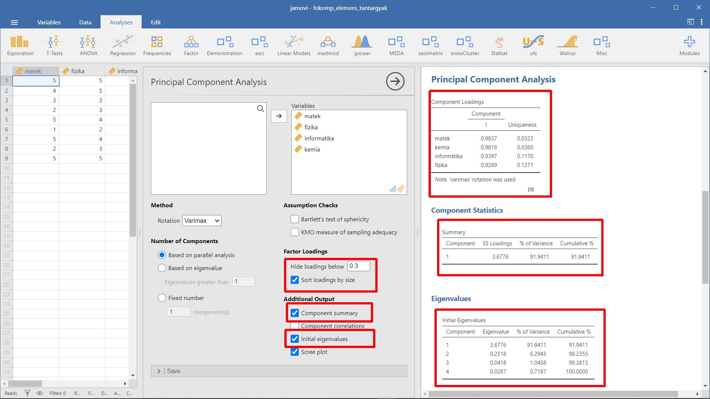
6. Főkomponens értékek kiszámítása
A főkomponens elemzés célja az eredeti változók csökkentése. A főkomponens(ek) az eredeti változók lineáris kombinációjával kifejezhetők. Ez(ek) a főkomponens értékek (jamovi-ban: Component score) az adatbázisban is rögzíthetők, és további elemzések kiindulópontjai lehetnek.
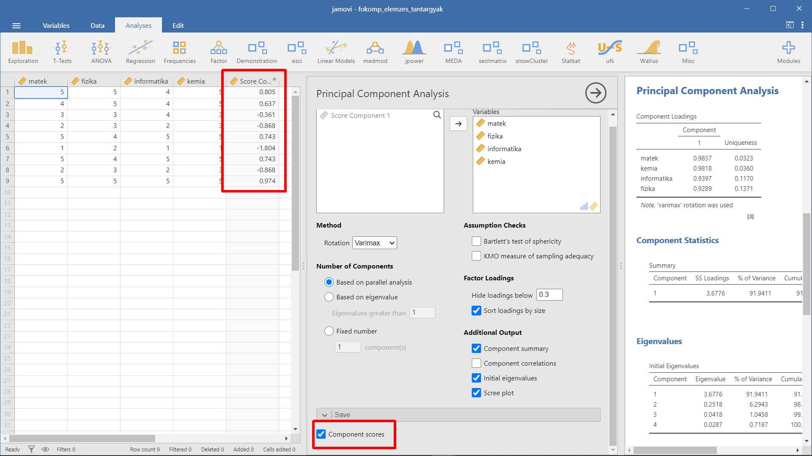
Sikerült tehát az érdemjegyeket egyetlen mérőszámmal kifejezni, a fenti főkomponens érték az, amely a lehető legjobban magában foglalja az egyes tantárgyakból szerzett jegyeket és ezáltal a reál tantárgyak iránti fogékonyság mérőszáma lehet. A legjobban a kilencedik személy teljesít a reál tárgyakból, legrosszabbul pedig a hatodik. Ezek az értékek standardizáltak, vagyis 0 átlagúak és 1 szórásúak.
R-ben több lehetőségünk van a főlomponenselemzés elvégzésére.
pca_1 <- prcomp(d, scale. = TRUE)
pca_1
#> Standard deviations (1, .., p=4):
#> [1] 1.9177188 0.5017701 0.2045278 0.1695572
#>
#> Rotation (n x k) = (4 x 4):
#> PC1 PC2 PC3 PC4
#> matek -0.5129614 0.2231620 -0.02972158 -0.82836339
#> fizika -0.4843985 -0.7077528 0.50610146 0.09113404
#> informatika -0.4900124 0.6474152 0.35260295 0.46520167
#> kemia -0.5119731 -0.1736040 -0.78654250 0.29848968pca_1 <- princomp(d, cor = TRUE)
pca_1
#> Call:
#> princomp(x = d, cor = TRUE)
#>
#> Standard deviations:
#> Comp.1 Comp.2 Comp.3 Comp.4
#> 1.9177188 0.5017701 0.2045278 0.1695572
#>
#> 4 variables and 9 observations.psych::pca(d, rotate = "varimax")
#> Principal Components Analysis
#> Call: principal(r = r, nfactors = nfactors, residuals = resid...
#> rotate = rotate, n.obs = n.obs, covar = covar, scores = s...
#> missing = missing, impute = impute, oblique.scores = obli...
#> method = method, use = use, cor = cor, correct = 0.5, wei...
#> Standardized loadings (pattern matrix) based upon correlation...
#> PC1 h2 u2 com
#> matek 0.98 0.97 0.032 1
#> fizika 0.93 0.86 0.137 1
#> informatika 0.94 0.88 0.117 1
#> kemia 0.98 0.96 0.036 1
#>
#> PC1
#> SS loadings 3.68
#> Proportion Var 0.92
#>
#> Mean item complexity = 1
#> Test of the hypothesis that 1 component is sufficient.
#>
#> The root mean square of the residuals (RMSR) is 0.05
#> with the empirical chi square 0.28 with prob < 0.87
#>
#> Fit based upon off diagonal values = 1pca_1 <- FactoMineR::PCA(d, graph = FALSE)
pca_1$eig
#> eigenvalue percentage of variance
#> comp 1 3.67764553 91.9411383
#> comp 2 0.25177321 6.2943303
#> comp 3 0.04183160 1.0457901
#> comp 4 0.02874965 0.7187414
#> cumulative percentage of variance
#> comp 1 91.94114
#> comp 2 98.23547
#> comp 3 99.28126
#> comp 4 100.00000
pca_1$var
#> $coord
#> Dim.1 Dim.2 Dim.3 Dim.4
#> matek 0.9837158 -0.1119760 -0.006078888 -0.14045500
#> fizika 0.9289402 0.3551292 0.103511795 0.01545243
#> informatika 0.9397061 -0.3248536 0.072117091 0.07887831
#> kemia 0.9818205 0.0871093 -0.160869772 0.05061108
#>
#> $cor
#> Dim.1 Dim.2 Dim.3 Dim.4
#> matek 0.9837158 -0.1119760 -0.006078888 -0.14045500
#> fizika 0.9289402 0.3551292 0.103511795 0.01545243
#> informatika 0.9397061 -0.3248536 0.072117091 0.07887831
#> kemia 0.9818205 0.0871093 -0.160869772 0.05061108
#>
#> $cos2
#> Dim.1 Dim.2 Dim.3 Dim.4
#> matek 0.9676968 0.012538628 3.695288e-05 0.0197276074
#> fizika 0.8629298 0.126116721 1.071469e-02 0.0002387777
#> informatika 0.8830475 0.105529830 5.200875e-03 0.0062217871
#> kemia 0.9639714 0.007588031 2.587908e-02 0.0025614817
#>
#> $contrib
#> Dim.1 Dim.2 Dim.3 Dim.4
#> matek 26.31294 4.980128 0.08833723 68.6185908
#> fizika 23.46419 50.091398 25.61386842 0.8305413
#> informatika 24.01122 41.914638 12.43288421 21.6412590
#> kemia 26.21165 3.013836 61.86491013 8.9096089
factoextra::fviz_eig(pca_1, addlabels = TRUE, ylim = c(0, 110))
factoextra::get_eigenvalue(pca_1)
#> eigenvalue variance.percent cumulative.variance.percent
#> Dim.1 3.67764553 91.9411383 91.94114
#> Dim.2 0.25177321 6.2943303 98.23547
#> Dim.3 0.04183160 1.0457901 99.28126
#> Dim.4 0.02874965 0.7187414 100.00000
factoextra::get_pca_ind(pca_1)
#> Principal Component Analysis Results for individuals
#> ===================================================
#> Name Description
#> 1 "$coord" "Coordinates for the individuals"
#> 2 "$cos2" "Cos2 for the individuals"
#> 3 "$contrib" "contributions of the individuals"
factoextra::get_pca_var(pca_1)
#> Principal Component Analysis Results for variables
#> ===================================================
#> Name Description
#> 1 "$coord" "Coordinates for the variables"
#> 2 "$cor" "Correlations between variables and dimensions"
#> 3 "$cos2" "Cos2 for the variables"
#> 4 "$contrib" "contributions of the variables"
factoextra::fviz_pca_ind(pca_1)
factoextra::fviz_pca_var(pca_1)
factoextra::fviz_pca_biplot(pca_1)
corrplot::corrplot(pca_1$var$cos2, is.corr = FALSE)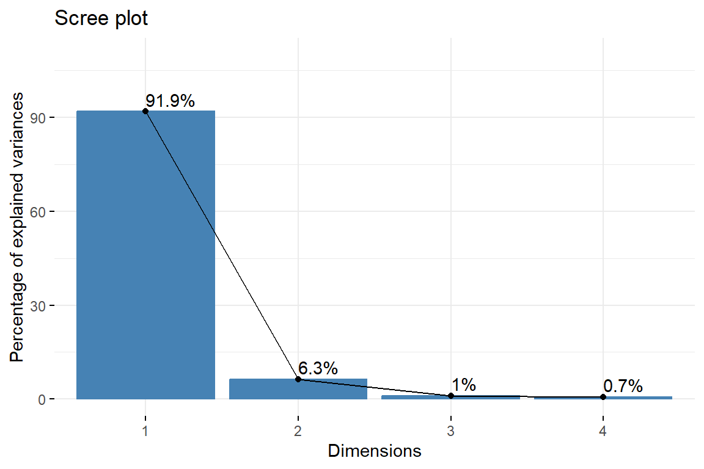
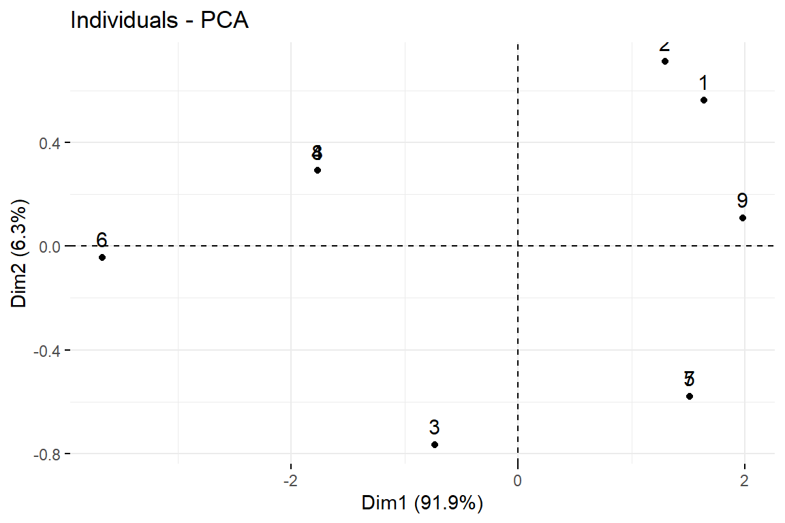
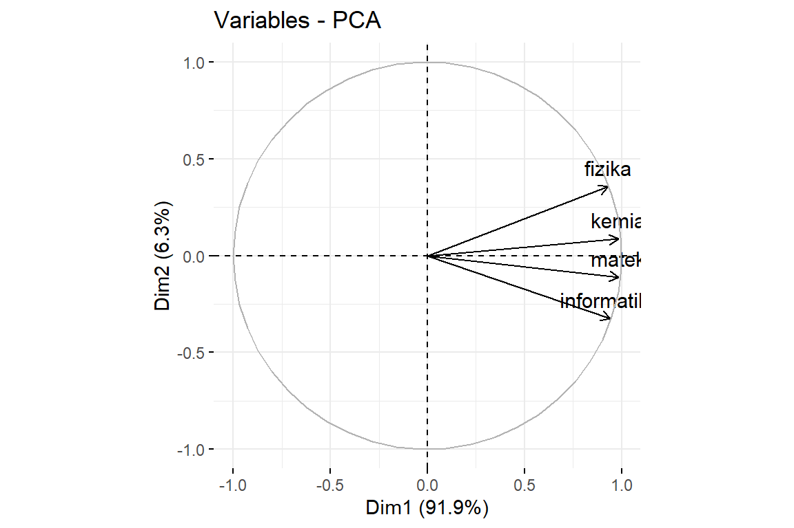
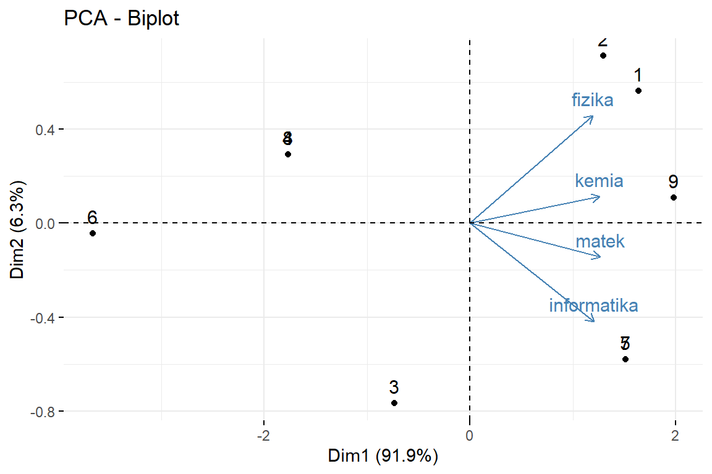
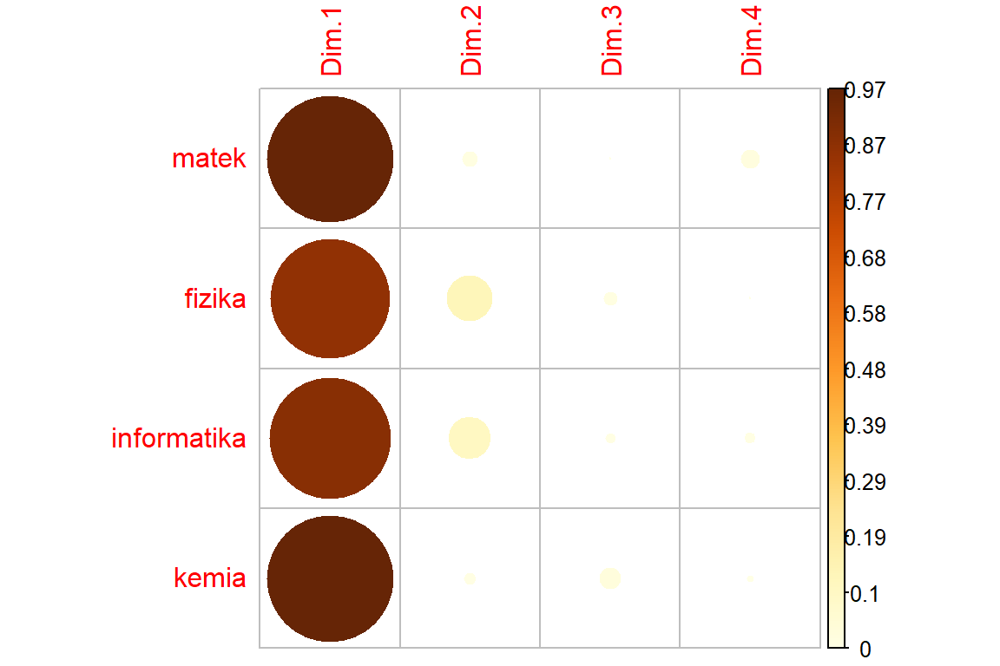
2.5 Példa: Létezik a reál tárgyak iránti fogékonyság?
- A példa forrása: Münnich és mtsai. (2006) 2.5.1 Probléma
- Kapcsolódó jamovi állomány:
fokomp_real_targyak.omv
Korábban már foglalkoztunk azzal a felvetéssel, hogy néhány tantárgy eredményeit egyetlen mérőszámmal reprezentáljuk. Korábbi példánkban a matematika, fizika, informatika és kémia jegyek közötti összefüggéseket vizsgáltuk egy kisebb adatbázison, most egy sokkal nagyobb adatbázis segítségével mutatjuk be, hogyan végezhetünk főkomponens-analízist. Az adatok a fokomp_real_targyak.xlsx állományban találhatók.
d <- rio::import(file = "adat/fokomp_real_targyak.xlsx")
str(d)
#> 'data.frame': 30 obs. of 4 variables:
#> $ matek : num 5 4 3 2 5 1 5 2 5 5 ...
#> $ fizika : num 5 5 3 3 4 2 4 3 5 3 ...
#> $ informatika: num 4 4 4 2 5 1 5 2 5 4 ...
#> $ kemia : num 5 5 3 3 5 1 5 3 5 5 ...
psych::headTail(d)
#> matek fizika informatika kemia
#> 1 5 5 4 5
#> 2 4 5 4 5
#> 3 3 3 4 3
#> 4 2 3 2 3
#> ... ... ... ... ...
#> 27 5 5 5 5
#> 28 5 4 5 5
#> 29 2 3 2 3
#> 30 5 4 5 5Hozzuk létre a korrelációs mátrixot!
cor(d)
#> matek fizika informatika kemia
#> matek 1.0000000 0.7746503 0.9391649 0.9075545
#> fizika 0.7746503 1.0000000 0.7038821 0.8344007
#> informatika 0.9391649 0.7038821 1.0000000 0.8172819
#> kemia 0.9075545 0.8344007 0.8172819 1.0000000Látható, hogy a négy tantárgy jegyei viszonylag összhangban vannak egymással abban az értelemben, hogy azok a diákok, akik az egyik tárgyból jól teljesítenek, azok a másik három tárgyból is.
Ezek alapján van egy olyan sejtésünk, hogy egy úgynevezett reál tárgyak iránti fogékonyság mutatóval reprezentálhatjuk a négy tantárgy eredményeit. Vagyis főkomponens-analízis segítségével ellenőrizhetjük, hogy az adatok valóban jól sűríthetőek-e egyetlen dimenzióba vagy mérőszámba, és ha igen, akkor ezt a dimenziót elnevezhetjük reál tárgyak iránti fogékonyságnak.
psych::pca(d, rotate = "varimax")
#> Principal Components Analysis
#> Call: principal(r = r, nfactors = nfactors, residuals = resid...
#> rotate = rotate, n.obs = n.obs, covar = covar, scores = s...
#> missing = missing, impute = impute, oblique.scores = obli...
#> method = method, use = use, cor = cor, correct = 0.5, wei...
#> Standardized loadings (pattern matrix) based upon correlation...
#> PC1 h2 u2 com
#> matek 0.97 0.94 0.057 1
#> fizika 0.88 0.78 0.220 1
#> informatika 0.93 0.86 0.139 1
#> kemia 0.95 0.91 0.091 1
#>
#> PC1
#> SS loadings 3.49
#> Proportion Var 0.87
#>
#> Mean item complexity = 1
#> Test of the hypothesis that 1 component is sufficient.
#>
#> The root mean square of the residuals (RMSR) is 0.07
#> with the empirical chi square 1.59 with prob < 0.45
#>
#> Fit based upon off diagonal values = 0.99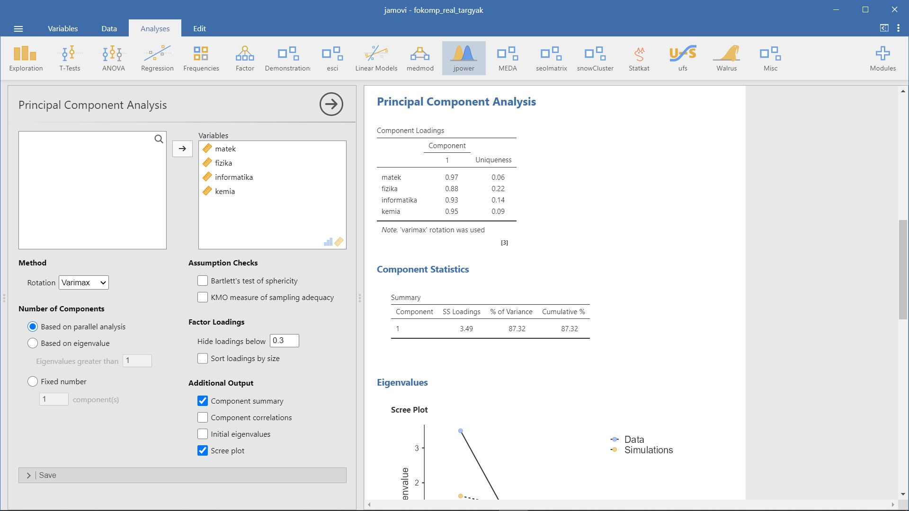
Összességében az adatok jól sűríthetők egyetlen mérőszámba, minimális információveszteséggel, ezt a mutatót pedig hívhatjuk a reál tárgyak iránti fogékonyság mutatójának.
2.6 Példa: Egy kérdőív szerkesztésének problémái
- A példa forrása: Münnich és mtsai. (2006) 2.5.2 Probléma
- Kapcsolódó jamovi állomány:
fokomp_kerdoivtervezet.omv
Kérdőívek kialakításkor gyakran előfordul az a probléma, hogy egy dimenzió mérésére nem áll rendelkezésünkre valamilyen bevált mérőeszköz, hanem magunknak kell egyet kialakítani. Egy jó kérdőív kialakítása hosszas és nagyon alapos munkát igényel. Ez a folyamat nagyvonalakban úgy néz ki, hogy az összeállított itemeket először egy kisebb mintán teszteljük (elővizsgálat), majd megnézzük, hogy az itemek valóban úgy „működnek-e”, ahogyan azt mi feltételeztük. Ez jelenti egyrészt a teszt megbízhatóságának, másrészt érvényességének vizsgálatát.
A megbízhatóság vizsgálatának egyik módszere, hogy megnézzük, az itemek valóban egy dimenzióra illeszkednek-e. A nem odaillő itemeket pedig kivesszük a kérdőívből (itemszelekció). Ennek módszerei lehetnek a
- főkomponens-analízis
- Cronbach-alfán lapuló
Az adatok a fokomp_kerdoivtervezet.xlsx állományban találhatók.
d <- rio::import(file = "adat/fokomp_kerdoivtervezet.xlsx")
str(d)
#> 'data.frame': 125 obs. of 10 variables:
#> $ K_1 : num 7 5 4 2 3 3 7 4 7 2 ...
#> $ K_2 : num 7 5 4 2 2 3 7 3 7 2 ...
#> $ K_3 : num 6 5 2 2 4 3 7 3 7 3 ...
#> $ K_4 : num 7 5 5 4 2 3 7 3 7 3 ...
#> $ K_5 : num 7 5 4 4 3 3 7 3 7 3 ...
#> $ K_6 : num 5 3 4 2 1 3 5 3 4 1 ...
#> $ K_7 : num 5 3 2 6 6 6 5 3 4 1 ...
#> $ K_8 : num 7 5 4 2 3 3 7 3 7 3 ...
#> $ K_9 : num 5 3 4 2 3 6 5 3 4 4 ...
#> $ K_10: num 5 3 4 3 2 2 7 3 7 3 ...
psych::headTail(d)
#> K_1 K_2 K_3 K_4 K_5 K_6 K_7 K_8 K_9 K_10
#> 1 7 7 6 7 7 5 5 7 5 5
#> 2 5 5 5 5 5 3 3 5 3 3
#> 3 4 4 2 5 4 4 2 4 4 4
#> 4 2 2 2 4 4 2 6 2 2 3
#> ... ... ... ... ... ... ... ... ... ... ...
#> 122 4 4 4 4 4 2 2 4 2 2
#> 123 2 2 2 2 2 4 1 4 3 3
#> 124 1 1 1 1 1 7 7 1 7 7
#> 125 3 3 3 3 3 3 3 3 3 3Először végezzünk főkomponens elemzést a változókra, hogy képet kaphassunk az adatok egymáshoz való viszonyáról. Kezdjük a korrelációs mátrixszal.
print(cor(d), digits = 2)
#> K_1 K_2 K_3 K_4 K_5 K_6 K_7 K_8 ...
#> K_1 1.00 0.935 0.824 0.819 0.889 -0.16 -0.30 0.74648 -...
#> K_2 0.93 1.000 0.824 0.807 0.884 -0.14 -0.26 0.75350 -...
#> K_3 0.82 0.824 1.000 0.774 0.822 -0.20 -0.26 0.70244 -...
#> K_4 0.82 0.807 0.774 1.000 0.826 -0.12 -0.26 0.69481 -...
#> K_5 0.89 0.884 0.822 0.826 1.000 -0.23 -0.31 0.78636 -...
#> K_6 -0.16 -0.140 -0.203 -0.117 -0.233 1.00 0.63 -0.18707 ...
#> K_7 -0.30 -0.264 -0.257 -0.256 -0.315 0.63 1.00 -0.31395 ...
#> K_8 0.75 0.753 0.702 0.695 0.786 -0.19 -0.31 1.00000 -...
#> K_9 -0.12 -0.099 -0.164 -0.109 -0.144 0.69 0.53 -0.26564 ...
#> K_10 0.10 0.106 0.095 -0.031 0.076 0.42 0.25 -0.00063 ...
#> K_10
#> K_1 0.10038
#> K_2 0.10637
#> K_3 0.09462
#> K_4 -0.03121
#> K_5 0.07551
#> K_6 0.41988
#> K_7 0.24515
#> K_8 -0.00063
#> K_9 0.46786
#> K_10 1.00000psych::pca(d, rotate = "varimax")
#> Principal Components Analysis
#> Call: principal(r = r, nfactors = nfactors, residuals = resid...
#> rotate = rotate, n.obs = n.obs, covar = covar, scores = s...
#> missing = missing, impute = impute, oblique.scores = obli...
#> method = method, use = use, cor = cor, correct = 0.5, wei...
#> Standardized loadings (pattern matrix) based upon correlation...
#> PC1 h2 u2 com
#> K_1 0.93 0.87216 0.13 1
#> K_2 0.93 0.85839 0.14 1
#> K_3 0.89 0.78819 0.21 1
#> K_4 0.87 0.76526 0.23 1
#> K_5 0.94 0.88251 0.12 1
#> K_6 -0.34 0.11231 0.89 1
#> K_7 -0.45 0.19850 0.80 1
#> K_8 0.85 0.72287 0.28 1
#> K_9 -0.30 0.08965 0.91 1
#> K_10 -0.02 0.00027 1.00 1
#>
#> PC1
#> SS loadings 5.29
#> Proportion Var 0.53
#>
#> Mean item complexity = 1
#> Test of the hypothesis that 1 component is sufficient.
#>
#> The root mean square of the residuals (RMSR) is 0.19
#> with the empirical chi square 386.88 with prob < 6.7e-61
#>
#> Fit based upon off diagonal values = 0.87Látható, hogy a 6, 7,9 és 10 -es itemek nem nagy súllyal vesznek részt az első főkomponensben, az egyediségük (nem magyarázott varianciájuk) nekik a legnagyobb. Az 1. főkomponens az összes variancia 53%-át magyarázza.
Ha elhagyjuk ezeket az itemeket, jelentősen javul a főkomponens elemzés eredménye:
psych::pca(d[-c(6, 7, 9, 10)], rotate = "varimax")
#> Principal Components Analysis
#> Call: principal(r = r, nfactors = nfactors, residuals = resid...
#> rotate = rotate, n.obs = n.obs, covar = covar, scores = s...
#> missing = missing, impute = impute, oblique.scores = obli...
#> method = method, use = use, cor = cor, correct = 0.5, wei...
#> Standardized loadings (pattern matrix) based upon correlation...
#> PC1 h2 u2 com
#> K_1 0.95 0.90 0.096 1
#> K_2 0.95 0.90 0.099 1
#> K_3 0.90 0.81 0.190 1
#> K_4 0.90 0.80 0.198 1
#> K_5 0.95 0.90 0.100 1
#> K_8 0.85 0.72 0.280 1
#>
#> PC1
#> SS loadings 5.04
#> Proportion Var 0.84
#>
#> Mean item complexity = 1
#> Test of the hypothesis that 1 component is sufficient.
#>
#> The root mean square of the residuals (RMSR) is 0.04
#> with the empirical chi square 5.89 with prob < 0.75
#>
#> Fit based upon off diagonal values = 1A magyarázott variancia felmegy 84%-ra, és mindegyik változónak szoros a kapcsolata az 1. főkomponenssel. Az itemek igen jól illeszkednek egyetlen dimenzióra.
A fenti vizsgálatot a Cronbach-alfa alapján is elvégezhetjük.
psych::alpha(d)
#> Some items ( K_6 K_7 K_9 K_10 ) were negatively correlated wi...
#> probably should be reversed.
#> To do this, run the function again with the 'check.keys=TRUE'...
#>
#> Reliability analysis
#> Call: psych::alpha(x = d)
#>
#> raw_alpha std.alpha G6(smc) average_r S/N ase mean sd me...
#> 0.77 0.78 0.91 0.26 3.5 0.032 3.5 1.1 ...
#>
#> 95% confidence boundaries
#> lower alpha upper
#> Feldt 0.71 0.77 0.83
#> Duhachek 0.71 0.77 0.84
#>
#> Reliability if an item is dropped:
#> raw_alpha std.alpha G6(smc) average_r S/N alpha se var.r
#> K_1 0.71 0.72 0.88 0.22 2.6 0.042 0.19
#> K_2 0.71 0.72 0.88 0.22 2.6 0.042 0.20
#> K_3 0.72 0.73 0.89 0.23 2.7 0.041 0.20
#> K_4 0.72 0.73 0.88 0.23 2.7 0.041 0.20
#> K_5 0.72 0.73 0.88 0.23 2.6 0.041 0.19
#> K_6 0.79 0.80 0.90 0.31 4.0 0.028 0.22
#> K_7 0.82 0.82 0.92 0.33 4.5 0.025 0.20
#> K_8 0.74 0.75 0.89 0.25 2.9 0.038 0.21
#> K_9 0.79 0.80 0.91 0.31 3.9 0.029 0.22
#> K_10 0.77 0.78 0.91 0.29 3.6 0.032 0.25
#> med.r
#> K_1 0.085
#> K_2 0.085
#> K_3 0.088
#> K_4 0.097
#> K_5 0.097
#> K_6 0.176
#> K_7 0.263
#> K_8 0.097
#> K_9 0.176
#> K_10 0.217
#>
#> Item statistics
#> n raw.r std.r r.cor r.drop mean sd
#> K_1 125 0.81 0.82 0.839 0.729 3.2 1.9
#> K_2 125 0.82 0.83 0.853 0.748 3.2 1.9
#> K_3 125 0.76 0.76 0.756 0.660 3.3 1.9
#> K_4 125 0.75 0.76 0.756 0.659 3.4 1.8
#> K_5 125 0.78 0.79 0.809 0.701 3.2 1.7
#> K_6 125 0.31 0.29 0.241 0.140 3.7 1.8
#> K_7 125 0.15 0.12 0.031 -0.049 4.1 2.1
#> K_8 125 0.66 0.68 0.652 0.558 3.4 1.6
#> K_9 125 0.32 0.31 0.247 0.160 3.7 1.8
#> K_10 125 0.44 0.43 0.330 0.278 3.6 1.9
#>
#> Non missing response frequency for each item
#> 1 2 3 4 5 6 7 miss
#> K_1 0.21 0.26 0.14 0.18 0.05 0.10 0.07 0
#> K_2 0.19 0.29 0.11 0.18 0.07 0.08 0.08 0
#> K_3 0.18 0.23 0.17 0.16 0.06 0.11 0.08 0
#> K_4 0.17 0.22 0.18 0.17 0.09 0.10 0.08 0
#> K_5 0.18 0.24 0.21 0.15 0.10 0.04 0.07 0
#> K_6 0.11 0.23 0.16 0.14 0.11 0.18 0.06 0
#> K_7 0.14 0.14 0.15 0.12 0.07 0.24 0.14 0
#> K_8 0.14 0.18 0.19 0.28 0.10 0.06 0.06 0
#> K_9 0.08 0.24 0.18 0.16 0.10 0.17 0.06 0
#> K_10 0.10 0.27 0.20 0.12 0.07 0.14 0.09 0Látható, hogy a Cronbach-alfa értéke 0,77, de javítható a 7. item eldobásával.
psych::alpha(d[c(-7)])
#> Some items ( K_6 K_9 ) were negatively correlated with the to...
#> probably should be reversed.
#> To do this, run the function again with the 'check.keys=TRUE'...
#>
#> Reliability analysis
#> Call: psych::alpha(x = d[c(-7)])
#>
#> raw_alpha std.alpha G6(smc) average_r S/N ase mean sd me...
#> 0.82 0.82 0.92 0.33 4.5 0.025 3.4 1.2 ...
#>
#> 95% confidence boundaries
#> lower alpha upper
#> Feldt 0.77 0.82 0.86
#> Duhachek 0.77 0.82 0.87
#>
#> Reliability if an item is dropped:
#> raw_alpha std.alpha G6(smc) average_r S/N alpha se var.r
#> K_1 0.76 0.76 0.89 0.29 3.2 0.034 0.19
#> K_2 0.76 0.76 0.89 0.29 3.2 0.034 0.19
#> K_3 0.77 0.77 0.90 0.30 3.4 0.032 0.20
#> K_4 0.77 0.77 0.90 0.30 3.4 0.032 0.20
#> K_5 0.77 0.77 0.89 0.29 3.3 0.033 0.19
#> K_6 0.86 0.86 0.92 0.43 6.0 0.019 0.19
#> K_8 0.79 0.79 0.90 0.32 3.7 0.030 0.20
#> K_9 0.85 0.85 0.92 0.42 5.8 0.019 0.19
#> K_10 0.84 0.83 0.93 0.39 5.0 0.022 0.24
#> med.r
#> K_1 0.100
#> K_2 0.097
#> K_3 0.103
#> K_4 0.103
#> K_5 0.103
#> K_6 0.699
#> K_8 0.103
#> K_9 0.699
#> K_10 0.699
#>
#> Item statistics
#> n raw.r std.r r.cor r.drop mean sd
#> K_1 125 0.87 0.87 0.89 0.818 3.2 1.9
#> K_2 125 0.88 0.88 0.90 0.829 3.2 1.9
#> K_3 125 0.81 0.81 0.80 0.735 3.3 1.9
#> K_4 125 0.81 0.81 0.80 0.733 3.4 1.8
#> K_5 125 0.85 0.85 0.87 0.792 3.2 1.7
#> K_6 125 0.19 0.18 0.11 0.012 3.7 1.8
#> K_8 125 0.73 0.74 0.71 0.640 3.4 1.6
#> K_9 125 0.22 0.22 0.15 0.051 3.7 1.8
#> K_10 125 0.39 0.39 0.29 0.227 3.6 1.9
#>
#> Non missing response frequency for each item
#> 1 2 3 4 5 6 7 miss
#> K_1 0.21 0.26 0.14 0.18 0.05 0.10 0.07 0
#> K_2 0.19 0.29 0.11 0.18 0.07 0.08 0.08 0
#> K_3 0.18 0.23 0.17 0.16 0.06 0.11 0.08 0
#> K_4 0.17 0.22 0.18 0.17 0.09 0.10 0.08 0
#> K_5 0.18 0.24 0.21 0.15 0.10 0.04 0.07 0
#> K_6 0.11 0.23 0.16 0.14 0.11 0.18 0.06 0
#> K_8 0.14 0.18 0.19 0.28 0.10 0.06 0.06 0
#> K_9 0.08 0.24 0.18 0.16 0.10 0.17 0.06 0
#> K_10 0.10 0.27 0.20 0.12 0.07 0.14 0.09 0Látható, hogy a Cronbach-alfa értéke 0,82, de javítható a 6. item eldobásával.
psych::alpha(d[c(-7, -6)])
#> Some items ( K_9 ) were negatively correlated with the total ...
#> probably should be reversed.
#> To do this, run the function again with the 'check.keys=TRUE'...
#>
#> Reliability analysis
#> Call: psych::alpha(x = d[c(-7, -6)])
#>
#> raw_alpha std.alpha G6(smc) average_r S/N ase mean sd me...
#> 0.86 0.86 0.92 0.43 6 0.019 3.4 1.3 ...
#>
#> 95% confidence boundaries
#> lower alpha upper
#> Feldt 0.82 0.86 0.89
#> Duhachek 0.82 0.86 0.89
#>
#> Reliability if an item is dropped:
#> raw_alpha std.alpha G6(smc) average_r S/N alpha se var.r
#> K_1 0.80 0.81 0.89 0.37 4.1 0.026 0.19
#> K_2 0.80 0.80 0.89 0.37 4.1 0.027 0.19
#> K_3 0.81 0.82 0.90 0.39 4.4 0.025 0.20
#> K_4 0.82 0.82 0.90 0.39 4.5 0.025 0.20
#> K_5 0.81 0.81 0.89 0.37 4.2 0.026 0.18
#> K_8 0.83 0.83 0.91 0.41 4.8 0.023 0.20
#> K_9 0.91 0.91 0.93 0.59 10.2 0.012 0.12
#> K_10 0.89 0.89 0.93 0.53 8.0 0.013 0.20
#> med.r
#> K_1 0.47
#> K_2 0.47
#> K_3 0.47
#> K_4 0.47
#> K_5 0.47
#> K_8 0.47
#> K_9 0.77
#> K_10 0.77
#>
#> Item statistics
#> n raw.r std.r r.cor r.drop mean sd
#> K_1 125 0.92 0.92 0.94 0.880 3.2 1.9
#> K_2 125 0.92 0.92 0.94 0.886 3.2 1.9
#> K_3 125 0.86 0.86 0.85 0.803 3.3 1.9
#> K_4 125 0.84 0.85 0.84 0.779 3.4 1.8
#> K_5 125 0.91 0.91 0.92 0.868 3.2 1.7
#> K_8 125 0.77 0.78 0.75 0.697 3.4 1.6
#> K_9 125 0.10 0.10 -0.02 -0.072 3.7 1.8
#> K_10 125 0.33 0.32 0.21 0.150 3.6 1.9
#>
#> Non missing response frequency for each item
#> 1 2 3 4 5 6 7 miss
#> K_1 0.21 0.26 0.14 0.18 0.05 0.10 0.07 0
#> K_2 0.19 0.29 0.11 0.18 0.07 0.08 0.08 0
#> K_3 0.18 0.23 0.17 0.16 0.06 0.11 0.08 0
#> K_4 0.17 0.22 0.18 0.17 0.09 0.10 0.08 0
#> K_5 0.18 0.24 0.21 0.15 0.10 0.04 0.07 0
#> K_8 0.14 0.18 0.19 0.28 0.10 0.06 0.06 0
#> K_9 0.08 0.24 0.18 0.16 0.10 0.17 0.06 0
#> K_10 0.10 0.27 0.20 0.12 0.07 0.14 0.09 0Látható, hogy a Cronbach-alfa értéke 0,86, de javítható a 9. item eldobásával.
psych::alpha(d[-c(7, 6, 9)])
#>
#> Reliability analysis
#> Call: psych::alpha(x = d[-c(7, 6, 9)])
#>
#> raw_alpha std.alpha G6(smc) average_r S/N ase mean sd me...
#> 0.91 0.91 0.93 0.59 10 0.012 3.3 1.5 ...
#>
#> 95% confidence boundaries
#> lower alpha upper
#> Feldt 0.88 0.91 0.93
#> Duhachek 0.89 0.91 0.93
#>
#> Reliability if an item is dropped:
#> raw_alpha std.alpha G6(smc) average_r S/N alpha se var.r
#> K_1 0.87 0.88 0.90 0.54 7.1 0.0173 0.1331
#> K_2 0.87 0.88 0.90 0.54 7.1 0.0173 0.1340
#> K_3 0.88 0.88 0.92 0.56 7.6 0.0163 0.1436
#> K_4 0.89 0.89 0.91 0.57 7.9 0.0157 0.1348
#> K_5 0.88 0.88 0.91 0.54 7.1 0.0168 0.1327
#> K_8 0.89 0.89 0.92 0.58 8.4 0.0149 0.1440
#> K_10 0.96 0.96 0.96 0.81 24.9 0.0053 0.0044
#> med.r
#> K_1 0.75
#> K_2 0.75
#> K_3 0.75
#> K_4 0.75
#> K_5 0.75
#> K_8 0.82
#> K_10 0.82
#>
#> Item statistics
#> n raw.r std.r r.cor r.drop mean sd
#> K_1 125 0.94 0.94 0.956 0.914 3.2 1.9
#> K_2 125 0.94 0.94 0.955 0.914 3.2 1.9
#> K_3 125 0.89 0.89 0.877 0.846 3.3 1.9
#> K_4 125 0.87 0.87 0.850 0.808 3.4 1.8
#> K_5 125 0.93 0.94 0.943 0.906 3.2 1.7
#> K_8 125 0.82 0.83 0.794 0.759 3.4 1.6
#> K_10 125 0.24 0.24 0.077 0.064 3.6 1.9
#>
#> Non missing response frequency for each item
#> 1 2 3 4 5 6 7 miss
#> K_1 0.21 0.26 0.14 0.18 0.05 0.10 0.07 0
#> K_2 0.19 0.29 0.11 0.18 0.07 0.08 0.08 0
#> K_3 0.18 0.23 0.17 0.16 0.06 0.11 0.08 0
#> K_4 0.17 0.22 0.18 0.17 0.09 0.10 0.08 0
#> K_5 0.18 0.24 0.21 0.15 0.10 0.04 0.07 0
#> K_8 0.14 0.18 0.19 0.28 0.10 0.06 0.06 0
#> K_10 0.10 0.27 0.20 0.12 0.07 0.14 0.09 0Látható, hogy a Cronbach-alfa értéke 0,91, de javítható a 10. item eldobásával.
psych::alpha(d[-c(7, 6, 9, 10)])
#>
#> Reliability analysis
#> Call: psych::alpha(x = d[-c(7, 6, 9, 10)])
#>
#> raw_alpha std.alpha G6(smc) average_r S/N ase mean sd
#> 0.96 0.96 0.96 0.81 25 0.0053 3.3 1.7
#> median_r
#> 0.82
#>
#> 95% confidence boundaries
#> lower alpha upper
#> Feldt 0.95 0.96 0.97
#> Duhachek 0.95 0.96 0.97
#>
#> Reliability if an item is dropped:
#> raw_alpha std.alpha G6(smc) average_r S/N alpha se var.r
#> K_1 0.95 0.95 0.94 0.79 19 0.0072 0.0034
#> K_2 0.95 0.95 0.94 0.79 19 0.0072 0.0037
#> K_3 0.96 0.96 0.95 0.81 22 0.0061 0.0054
#> K_4 0.96 0.96 0.95 0.82 22 0.0060 0.0052
#> K_5 0.95 0.95 0.94 0.79 19 0.0071 0.0050
#> K_8 0.96 0.96 0.96 0.84 26 0.0053 0.0022
#> med.r
#> K_1 0.80
#> K_2 0.80
#> K_3 0.81
#> K_4 0.82
#> K_5 0.79
#> K_8 0.82
#>
#> Item statistics
#> n raw.r std.r r.cor r.drop mean sd
#> K_1 125 0.95 0.95 0.95 0.93 3.2 1.9
#> K_2 125 0.95 0.95 0.95 0.92 3.2 1.9
#> K_3 125 0.90 0.90 0.87 0.86 3.3 1.9
#> K_4 125 0.90 0.90 0.86 0.85 3.4 1.8
#> K_5 125 0.95 0.95 0.94 0.92 3.2 1.7
#> K_8 125 0.85 0.85 0.80 0.79 3.4 1.6
#>
#> Non missing response frequency for each item
#> 1 2 3 4 5 6 7 miss
#> K_1 0.21 0.26 0.14 0.18 0.05 0.10 0.07 0
#> K_2 0.19 0.29 0.11 0.18 0.07 0.08 0.08 0
#> K_3 0.18 0.23 0.17 0.16 0.06 0.11 0.08 0
#> K_4 0.17 0.22 0.18 0.17 0.09 0.10 0.08 0
#> K_5 0.18 0.24 0.21 0.15 0.10 0.04 0.07 0
#> K_8 0.14 0.18 0.19 0.28 0.10 0.06 0.06 0Látható, hogy a Cronbach-alfa értéke 0,96.
A kapott eredmények alapján az itemszelekciót ennél a lépésnél befejezhetjük. Az így kapott hat itemünk a statisztikai eredmények alapján egészen jól lefednek egy dimenziót, ezáltal használhatóak egy jelenség kérdőíves vizsgálatára.
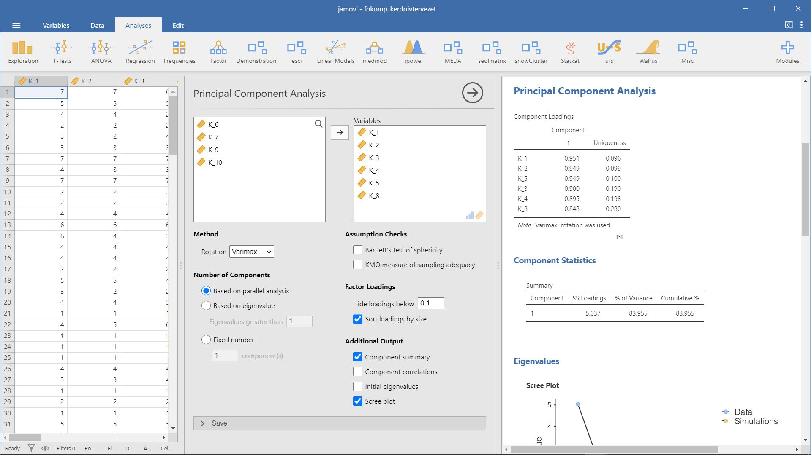
2.7 Példa: Mi is az a munkahelyi tolerancia?
- A példa forrása: Münnich és mtsai. (2006) 2.5.3 Probléma
- Kapcsolódó jamovi állomány:
fokomp_kerdoivtervezet.omv
Ebben a példában azt vizsgáljuk meg, hogy ha a toleranciát munkahelyen vizsgáljuk, akkor mely jelenségeket, viselkedéseket kell figyelembe vennünk. Az adatok a fokomp_munkahelyi_tolarencia.xlsx állományban találhatók.
d <- rio::import("adat/fokomp_munkahelyi_tolarencia.xlsx")
str(d)
#> 'data.frame': 155 obs. of 18 variables:
#> $ alkohol : num 1 1 1 1 1 2 1 1 1 1 ...
#> $ kabitoszer : num 1 1 1 1 1 1 1 1 1 1 ...
#> $ hianyzik : num 3 1 1 2 1 1 5 1 1 3 ...
#> $ dohanyzas : num 4 5 1 3 1 4 5 1 5 5 ...
#> $ udvariatlan: num 3 1 5 2 2 1 1 1 1 1 ...
#> $ rendetlen : num 3 1 5 2 2 1 1 1 1 3 ...
#> $ pontatlan : num 3 1 5 3 2 1 1 1 1 3 ...
#> $ pletykas : num 1 1 5 2 1 2 1 1 1 3 ...
#> $ harsany : num 4 3 5 2 2 4 1 1 2 3 ...
#> $ tudalekos : num 3 2 4 3 2 2 1 1 2 1 ...
#> $ csamcsog : num 3 1 5 3 3 1 1 1 1 3 ...
#> $ lusta : num 3 1 5 2 3 4 1 1 1 5 ...
#> $ szemtelen : num 3 1 5 2 2 1 1 1 1 1 ...
#> $ bufog : num 3 1 5 2 2 5 5 1 1 1 ...
#> $ felelotlen : num 3 1 5 2 2 1 1 1 1 1 ...
#> $ bosszuallo : num 2 2 3 2 1 1 1 1 1 1 ...
#> $ durva : num 2 1 5 2 2 1 1 1 1 1 ...
#> $ agressziv : num 2 1 5 1 2 1 1 1 1 1 ...
psych::headTail(d)
#> alkohol kabitoszer hianyzik dohanyzas udvariatlan rendetlen
#> 1 1 1 3 4 3 3
#> 2 1 1 1 5 1 1
#> 3 1 1 1 1 5 5
#> 4 1 1 2 3 2 2
#> ... ... ... ... ... ... ...
#> 152 3 1 2 5 3 4
#> 153 3 1 2 2 2 1
#> 154 4 4 2 5 3 4
#> 155 3 3 4 5 3 4
#> pontatlan pletykas harsany tudalekos csamcsog lusta szemt...
#> 1 3 1 4 3 3 3 ...
#> 2 1 1 3 2 1 1 ...
#> 3 5 5 5 4 5 5 ...
#> 4 3 2 2 3 3 2 ...
#> ... ... ... ... ... ... ... ...
#> 152 2 2 5 3 4 5 ...
#> 153 1 1 1 2 1 1 ...
#> 154 5 5 3 2 2 3 ...
#> 155 4 2 2 1 1 3 ...
#> bufog felelotlen bosszuallo durva agressziv
#> 1 3 3 2 2 2
#> 2 1 1 2 1 1
#> 3 5 5 3 5 5
#> 4 2 2 2 2 1
#> ... ... ... ... ... ...
#> 152 4 2 1 3 1
#> 153 1 1 1 1 1
#> 154 4 5 5 5 5
#> 155 1 2 1 2 2A fenti outputban látható, hogy adatokat találunk arról, hogy egyes viselkedéseket (pl. agresszivitás, dohányzás, durva beszéd stb.) mennyire tartanak zavarónak az emberek. Az adatokból a főkomponens analízis és a Cronbach-alfa segítségével pedig megnézhetjük, hogy az adatok összegezhetőek-e egy általános munkahelyi tolerancia főkomponensbe.
psych::pca(d, rotate = "varimax")
#> Principal Components Analysis
#> Call: principal(r = r, nfactors = nfactors, residuals = resid...
#> rotate = rotate, n.obs = n.obs, covar = covar, scores = s...
#> missing = missing, impute = impute, oblique.scores = obli...
#> method = method, use = use, cor = cor, correct = 0.5, wei...
#> Standardized loadings (pattern matrix) based upon correlation...
#> PC1 h2 u2 com
#> alkohol 0.54 0.295 0.71 1
#> kabitoszer 0.62 0.386 0.61 1
#> hianyzik 0.62 0.384 0.62 1
#> dohanyzas 0.18 0.033 0.97 1
#> udvariatlan 0.78 0.607 0.39 1
#> rendetlen 0.80 0.633 0.37 1
#> pontatlan 0.74 0.548 0.45 1
#> pletykas 0.47 0.224 0.78 1
#> harsany 0.41 0.170 0.83 1
#> tudalekos 0.53 0.283 0.72 1
#> csamcsog 0.70 0.492 0.51 1
#> lusta 0.73 0.538 0.46 1
#> szemtelen 0.83 0.692 0.31 1
#> bufog 0.62 0.386 0.61 1
#> felelotlen 0.77 0.587 0.41 1
#> bosszuallo 0.73 0.532 0.47 1
#> durva 0.73 0.535 0.46 1
#> agressziv 0.75 0.559 0.44 1
#>
#> PC1
#> SS loadings 7.88
#> Proportion Var 0.44
#>
#> Mean item complexity = 1
#> Test of the hypothesis that 1 component is sufficient.
#>
#> The root mean square of the residuals (RMSR) is 0.11
#> with the empirical chi square 578.76 with prob < 3e-56
#>
#> Fit based upon off diagonal values = 0.93Az első főkomponens csupán az összvariancia 43%-át magyarázza. A fentiek alapján főleg a “dohányzás”, a “harsány” és a “pletykás” változó az, amely valamennyire „kilóg” a modellből, hiszen a hozzájuk tartozó súlyok a legkisebbek a fenti outputban.
library(tidyverse)
psych::pca(d %>%
select(-dohanyzas, -harsany, -pletykas), rotate = "varimax")
#> Principal Components Analysis
#> Call: principal(r = r, nfactors = nfactors, residuals = resid...
#> rotate = rotate, n.obs = n.obs, covar = covar, scores = s...
#> missing = missing, impute = impute, oblique.scores = obli...
#> method = method, use = use, cor = cor, correct = 0.5, wei...
#> Standardized loadings (pattern matrix) based upon correlation...
#> PC1 h2 u2 com
#> alkohol 0.56 0.31 0.69 1
#> kabitoszer 0.64 0.41 0.59 1
#> hianyzik 0.63 0.40 0.60 1
#> udvariatlan 0.77 0.60 0.40 1
#> rendetlen 0.78 0.61 0.39 1
#> pontatlan 0.73 0.54 0.46 1
#> tudalekos 0.50 0.25 0.75 1
#> csamcsog 0.69 0.48 0.52 1
#> lusta 0.72 0.52 0.48 1
#> szemtelen 0.84 0.71 0.29 1
#> bufog 0.62 0.38 0.62 1
#> felelotlen 0.78 0.61 0.39 1
#> bosszuallo 0.75 0.56 0.44 1
#> durva 0.75 0.56 0.44 1
#> agressziv 0.77 0.59 0.41 1
#>
#> PC1
#> SS loadings 7.53
#> Proportion Var 0.50
#>
#> Mean item complexity = 1
#> Test of the hypothesis that 1 component is sufficient.
#>
#> The root mean square of the residuals (RMSR) is 0.1
#> with the empirical chi square 335.97 with prob < 4.6e-30
#>
#> Fit based upon off diagonal values = 0.95Így az első főkomponens által magyarázott összvariancia már elérte az 50%-ot.
Vizsgáljuk meg a Cronbach-alfa értékét is.
RcmdrMisc::reliability(cov(d))
#> Alpha reliability = 0.9155
#> Standardized alpha = 0.9175
#>
#> Reliability deleting each item in turn:
#> Alpha Std.Alpha r(item, total)
#> alkohol 0.9130 0.9154 0.5086
#> kabitoszer 0.9115 0.9138 0.5657
#> hianyzik 0.9114 0.9136 0.5711
#> dohanyzas 0.9233 0.9236 0.1696
#> udvariatlan 0.9075 0.9093 0.7314
#> rendetlen 0.9066 0.9087 0.7537
#> pontatlan 0.9085 0.9106 0.6837
#> pletykas 0.9149 0.9170 0.4295
#> harsany 0.9160 0.9183 0.3788
#> tudalekos 0.9136 0.9158 0.4791
#> csamcsog 0.9090 0.9113 0.6587
#> lusta 0.9086 0.9105 0.6862
#> szemtelen 0.9065 0.9083 0.7730
#> bufog 0.9115 0.9136 0.5714
#> felelotlen 0.9084 0.9105 0.6847
#> bosszuallo 0.9090 0.9113 0.6599
#> durva 0.9087 0.9111 0.6699
#> agressziv 0.9084 0.9109 0.6764A fenti output alapján már viszonylag magas a Cronbach-alfa értéke (0,915), de látható, hogy a “dohányzás” eltávolításával tovább növelhető.
RcmdrMisc::reliability(cov(d %>%
select(-dohanyzas)))
#> Alpha reliability = 0.9233
#> Standardized alpha = 0.9236
#>
#> Reliability deleting each item in turn:
#> Alpha Std.Alpha r(item, total)
#> alkohol 0.9222 0.9226 0.4892
#> kabitoszer 0.9202 0.9206 0.5673
#> hianyzik 0.9205 0.9208 0.5573
#> udvariatlan 0.9161 0.9161 0.7331
#> rendetlen 0.9155 0.9156 0.7493
#> pontatlan 0.9170 0.9172 0.6900
#> pletykas 0.9234 0.9238 0.4320
#> harsany 0.9249 0.9253 0.3684
#> tudalekos 0.9220 0.9224 0.4883
#> csamcsog 0.9177 0.9180 0.6629
#> lusta 0.9173 0.9174 0.6856
#> szemtelen 0.9149 0.9148 0.7856
#> bufog 0.9205 0.9205 0.5674
#> felelotlen 0.9164 0.9168 0.7100
#> bosszuallo 0.9173 0.9178 0.6777
#> durva 0.9175 0.9179 0.6699
#> agressziv 0.9169 0.9174 0.6909A fenti output alapján a Cronbach-alfa értéke (0,923), de látható, hogy a “harsany” eltávolításával tovább növelhető.
RcmdrMisc::reliability(cov(d %>%
select(-dohanyzas, -harsany)))
#> Alpha reliability = 0.9249
#> Standardized alpha = 0.9253
#>
#> Reliability deleting each item in turn:
#> Alpha Std.Alpha r(item, total)
#> alkohol 0.9238 0.9245 0.5019
#> kabitoszer 0.9215 0.9220 0.5903
#> hianyzik 0.9221 0.9225 0.5694
#> udvariatlan 0.9178 0.9180 0.7306
#> rendetlen 0.9173 0.9176 0.7419
#> pontatlan 0.9188 0.9192 0.6890
#> pletykas 0.9262 0.9269 0.4018
#> tudalekos 0.9246 0.9254 0.4601
#> csamcsog 0.9199 0.9204 0.6470
#> lusta 0.9195 0.9198 0.6660
#> szemtelen 0.9164 0.9165 0.7874
#> bufog 0.9226 0.9228 0.5616
#> felelotlen 0.9177 0.9182 0.7236
#> bosszuallo 0.9184 0.9191 0.6989
#> durva 0.9188 0.9195 0.6832
#> agressziv 0.9182 0.9188 0.7053A fenti output alapján a Cronbach-alfa értéke (0,925), de látható, hogy a “pletykas” eltávolításával tovább növelhető.
RcmdrMisc::reliability(cov(d %>%
select(-dohanyzas, -harsany, -pletykas)))
#> Alpha reliability = 0.9262
#> Standardized alpha = 0.9269
#>
#> Reliability deleting each item in turn:
#> Alpha Std.Alpha r(item, total)
#> alkohol 0.9254 0.9262 0.5101
#> kabitoszer 0.9231 0.9238 0.5931
#> hianyzik 0.9236 0.9242 0.5752
#> udvariatlan 0.9193 0.9198 0.7250
#> rendetlen 0.9189 0.9195 0.7319
#> pontatlan 0.9206 0.9212 0.6769
#> tudalekos 0.9269 0.9280 0.4410
#> csamcsog 0.9215 0.9222 0.6453
#> lusta 0.9211 0.9217 0.6617
#> szemtelen 0.9174 0.9177 0.7958
#> bufog 0.9243 0.9246 0.5652
#> felelotlen 0.9190 0.9197 0.7274
#> bosszuallo 0.9198 0.9207 0.7007
#> durva 0.9200 0.9208 0.6947
#> agressziv 0.9194 0.9202 0.7133Az eredmények alapján az adatredukciót ezzel a lépéssel be is fejezhetjük. A modellben maradt változókat tekinthetjük az általános munkahelyi toleranciát lefedő viselkedéseknek.
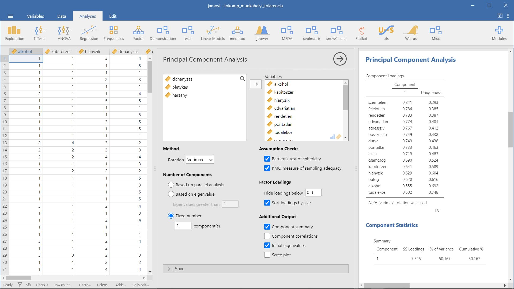
2.8 Példa: Egy elégedettségvizsgálat tanulságai
- A példa forrása: Münnich és mtsai. (2006) 2.5.4 Probléma
- Kapcsolódó jamovi állomány:
fokomp_munkahelyi_elegedettseg.omv
Ebben a példánkban azt a kérdést járjuk körbe, hogy mely tényezők befolyásolják azt, hogy elégedett-e valaki az egyetemi oktatással, mely tényezők kerülhetnének be egy tolerancia kérdőív itemei közé.
A fokomp_munkahelyi_elegedettseg.xlsx adatbázis a következő kérdésekre adott válaszokat tartalmazza:
Mennyire vagy elégedett…
- az egyetemen szerzett ismeretek felhasználhatóságával? (
DK210) - az egyetem ösztönző, fejlesztő tevékenységével? (
DK212) - az egyetemen az információ áramlással? (
DK214) - a szakodon tanított tárgyakkal? (
DK215) - a tanárok előadókészségével? (
DK219) - a tanárok szakmai felkészültségével? (
DK220) - az oktatóid tanítási módszereivel? (
DK221) - a kutatási lehetőségekkel? (
DK217)
- a szakod által adott elhelyezkedési lehetőségekkel? (
DK218)
d <- rio::import(file = "adat/fokomp_munkahelyi_elegedettseg.xlsx")
str(d)
#> 'data.frame': 622 obs. of 9 variables:
#> $ DK210: num 6 3 20 13 5 5 10 16 14 5 ...
#> $ DK212: num 6 7 12 10 7 5 10 13 15 10 ...
#> $ DK214: num 11 1 16 14 10 7 10 17 14 13 ...
#> $ DK215: num 13 16 18 14 12 8 10 18 11 14 ...
#> $ DK217: num 4 10 19 10 5 15 10 15 9 18 ...
#> $ DK218: num 11 15 17 10 3 15 10 18 10 16 ...
#> $ DK219: num 10 8 17 11 9 2 10 18 13 19 ...
#> $ DK220: num 10 18 16 12 13 11 15 20 15 19 ...
#> $ DK221: num 10 10 17 13 7 5 10 15 15 17 ...
psych::headTail(d)
#> DK210 DK212 DK214 DK215 DK217 DK218 DK219 DK220 DK221
#> 1 6 6 11 13 4 11 10 10 10
#> 2 3 7 1 16 10 15 8 18 10
#> 3 20 12 16 18 19 17 17 16 17
#> 4 13 10 14 14 10 10 11 12 13
#> ... ... ... ... ... ... ... ... ... ...
#> 619 2 13 20 5 10 5 14 16 17
#> 620 16 17 11 18 20 18 15 16 19
#> 621 19 17 8 9 11 15 16 17 16
#> 622 13 14 7 11 11 4 9 15 10psych::pca(d, rotate = "varimax")
#> Principal Components Analysis
#> Call: principal(r = r, nfactors = nfactors, residuals = resid...
#> rotate = rotate, n.obs = n.obs, covar = covar, scores = s...
#> missing = missing, impute = impute, oblique.scores = obli...
#> method = method, use = use, cor = cor, correct = 0.5, wei...
#> Standardized loadings (pattern matrix) based upon correlation...
#> PC1 h2 u2 com
#> DK210 0.71 0.50 0.50 1
#> DK212 0.77 0.59 0.41 1
#> DK214 0.55 0.30 0.70 1
#> DK215 0.74 0.54 0.46 1
#> DK217 0.59 0.35 0.65 1
#> DK218 0.40 0.16 0.84 1
#> DK219 0.79 0.62 0.38 1
#> DK220 0.70 0.49 0.51 1
#> DK221 0.78 0.61 0.39 1
#>
#> PC1
#> SS loadings 4.17
#> Proportion Var 0.46
#>
#> Mean item complexity = 1
#> Test of the hypothesis that 1 component is sufficient.
#>
#> The root mean square of the residuals (RMSR) is 0.09
#> with the empirical chi square 342.93 with prob < 1.8e-56
#>
#> Fit based upon off diagonal values = 0.95Az első főkomponens által magyarázott variancia az összvariancia 46%-át teszi ki. Vizsgáljuk meg mely változók járulnak kevésbé hozzá az első főkomponens kialakításához. A DK214, DK217 és a DK218-as kérdés „lóg ki” a sorból, hiszen a hozzájuk tartozó főkomponenssúlyok rendre alacsonyak.
psych::pca(d %>%
select(-DK214, -DK217, -DK218), rotate = "varimax")
#> Principal Components Analysis
#> Call: principal(r = r, nfactors = nfactors, residuals = resid...
#> rotate = rotate, n.obs = n.obs, covar = covar, scores = s...
#> missing = missing, impute = impute, oblique.scores = obli...
#> method = method, use = use, cor = cor, correct = 0.5, wei...
#> Standardized loadings (pattern matrix) based upon correlation...
#> PC1 h2 u2 com
#> DK210 0.71 0.51 0.49 1
#> DK212 0.74 0.55 0.45 1
#> DK215 0.74 0.55 0.45 1
#> DK219 0.83 0.68 0.32 1
#> DK220 0.74 0.54 0.46 1
#> DK221 0.82 0.67 0.33 1
#>
#> PC1
#> SS loadings 3.51
#> Proportion Var 0.59
#>
#> Mean item complexity = 1
#> Test of the hypothesis that 1 component is sufficient.
#>
#> The root mean square of the residuals (RMSR) is 0.11
#> with the empirical chi square 208.36 with prob < 5.8e-40
#>
#> Fit based upon off diagonal values = 0.96az első főkomponens által magyarázott variancia immár elérte az 50%-ot (pontosan 59%), vagyis magyarázóértéke ezen mutató alapján elégséges. A komponens mátrixban szereplő korrelációs értékek megfelelőek.
Vizsgáljuk meg a Cronbach-alfa értékét is.
RcmdrMisc::reliability(cov(d))
#> Alpha reliability = 0.8405
#> Standardized alpha = 0.8478
#>
#> Reliability deleting each item in turn:
#> Alpha Std.Alpha r(item, total)
#> DK210 0.8188 0.8280 0.6014
#> DK212 0.8087 0.8194 0.6872
#> DK214 0.8374 0.8444 0.4424
#> DK215 0.8164 0.8247 0.6302
#> DK217 0.8315 0.8396 0.4911
#> DK218 0.8512 0.8565 0.3223
#> DK219 0.8126 0.8202 0.6595
#> DK220 0.8232 0.8301 0.5743
#> DK221 0.8138 0.8208 0.6582A fenti output alapján a Cronbach-alfa értéke (0,841), de látható, hogy a “DK218” eltávolításával tovább növelhető.
RcmdrMisc::reliability(cov(d %>%
select(-DK218)))
#> Alpha reliability = 0.8512
#> Standardized alpha = 0.8565
#>
#> Reliability deleting each item in turn:
#> Alpha Std.Alpha r(item, total)
#> DK210 0.8336 0.8404 0.5886
#> DK212 0.8220 0.8302 0.6807
#> DK214 0.8533 0.8570 0.4454
#> DK215 0.8282 0.8345 0.6380
#> DK217 0.8481 0.8528 0.4828
#> DK219 0.8231 0.8285 0.6758
#> DK220 0.8346 0.8395 0.5905
#> DK221 0.8236 0.8286 0.6797A fenti output alapján a Cronbach-alfa értéke (0,851), de látható, hogy a “DK214” eltávolításával tovább növelhető.
RcmdrMisc::reliability(cov(d %>%
select(-DK218, -DK214)))
#> Alpha reliability = 0.8533
#> Standardized alpha = 0.857
#>
#> Reliability deleting each item in turn:
#> Alpha Std.Alpha r(item, total)
#> DK210 0.8359 0.8410 0.5953
#> DK212 0.8274 0.8332 0.6520
#> DK215 0.8303 0.8350 0.6350
#> DK217 0.8564 0.8576 0.4763
#> DK219 0.8206 0.8244 0.6975
#> DK220 0.8367 0.8402 0.5945
#> DK221 0.8221 0.8256 0.6943A fenti output alapján a Cronbach-alfa értéke (0,853), de látható, hogy a “DK217” eltávolításával tovább növelhető.
RcmdrMisc::reliability(cov(d %>%
select(-DK218, -DK214, -DK217)))
#> Alpha reliability = 0.8564
#> Standardized alpha = 0.8576
#>
#> Reliability deleting each item in turn:
#> Alpha Std.Alpha r(item, total)
#> DK210 0.8419 0.8440 0.5954
#> DK212 0.8363 0.8377 0.6286
#> DK215 0.8354 0.8374 0.6280
#> DK219 0.8194 0.8202 0.7121
#> DK220 0.8398 0.8406 0.6064
#> DK221 0.8208 0.8217 0.7090A Cronbach-alfa értékét már nem tudjuk tovább növelni a változók eltávolításával.
Összegezve, az eredmények alapján csupán a szak által adott elhelyezkedési lehetőségek, az információáramlás és a kutatási lehetőségek nem kerülnek be az egyetemi oktatással való elégedettség mérőszámába, míg a többi változó eredményei igen.
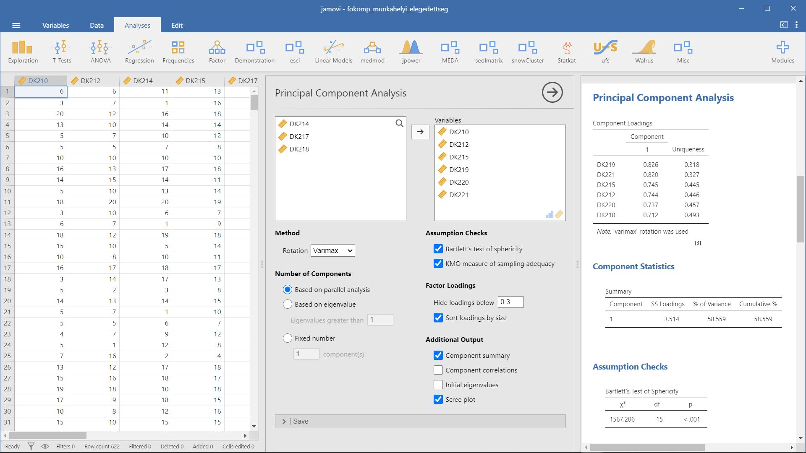